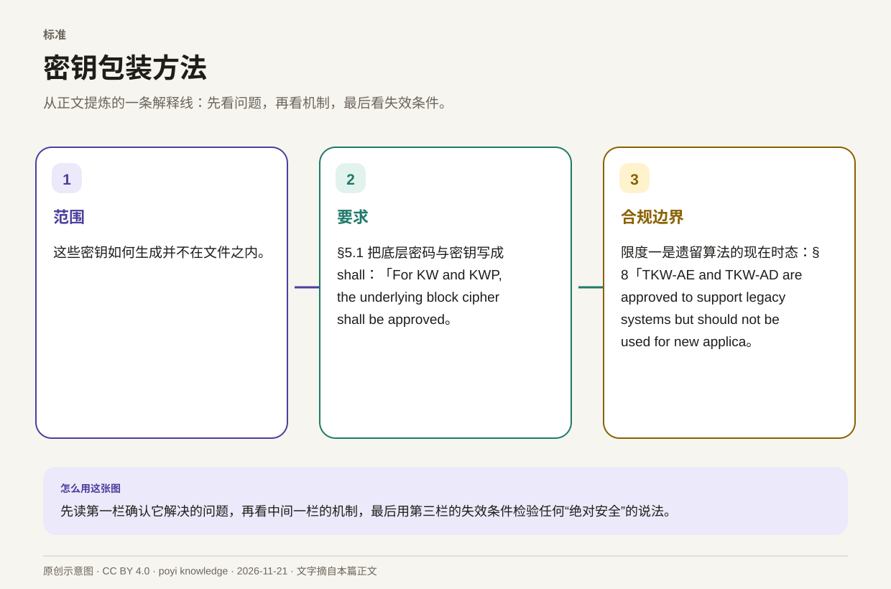
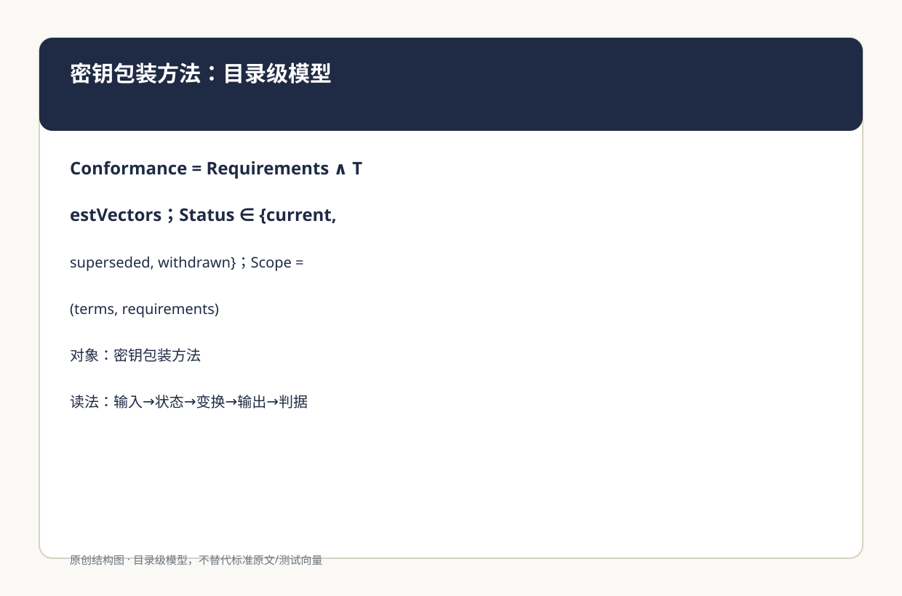

原理与机制
标准：密钥包装方法（Methods for Key Wrapping）。摘要第一句给出主题与两面服务：「This publication describes cryptographic methods that are approved for “key wrapping,” i.e., the protection of the confidentiality and integrity of cryptographic keys.」第二句列出新增的模式：「this publication specifies two new, deterministic authenticated-encryption modes of operation of the Advanced Encryption Standard (AES) algorithm: the AES Key Wrap (KW) mode and the AES Key Wrap With Padding (KWP) mode.」第三句为遗留用途保留一项：「An analogous mode with the Triple Data Encryption Algorithm (TDEA) as the underlying block cipher, called TKW, is also specified, to support legacy applications.」§1 把目的压缩为一句：「The purpose of this part is to provide approved methods for key wrapping, i.e., the protection of cryptographic keys.」三个名字就是本文件的产出：两支 AES 模式与一支 TDEA 变体，被保护对象写作密钥本身；这些密钥如何生成并不在文件之内。

为什么重要
§3.1 先给设计目标：「KW, KWP, and TKW were designed to protect the confidentiality and the authenticity/integrity of cryptographic keys.」再给出理由本身：「Each provides an option for protecting keys in a manner that is distinct from the methods that protect general data.」与「Segregating keys from general data can provide an extra layer of protection.」但同一节立刻取消必要性：「there is no requirement to protect cryptographic keys with a distinct cryptographic method.」鲁棒性的代价也写在这里：「each bit of output can be expected to depend in a nontrivial fashion on each bit of input」，其下一句指出这是以吞吐率为代价换得。故本文件补足的是可分离保护密钥的批准方法，不是把密钥保护变成单独方法的义务。
应用与实例
§5.1 把底层密码与密钥写成 shall：「For KW and KWP, the underlying block cipher shall be approved, and the block size shall be 128 bits.」与「The KEK shall be secret, i.e., disclosed only to parties that are authorized to know the protected information.」§5.3.1 给出长度上限：「the plaintext for KW-AE shall be limited to fewer than 254 semiblocks」（此处 254 为 2 的 54 次方丢上标所得）。符合性按函数申报，共六项：§8「An implementation may claim conformance to one or more of the following six functions: KWAE, KW-AD, KWP-AE, KWP-AD, TKW-AE, and TKW-AD.」验证路径写在 §2：「Conformance testing for implementations of this Recommendation will be conducted within the framework of the Cryptographic Algorithm Validation Program (CAVP) and the Cryptographic Module Validation Program (CMVP).」同节把措辞层级钉死：「The requirements of this Recommendation are indicated by the word “shall.”」五句的层级因此一致：算法须批准且分组长度为 128 比特，KEK 须保密，明文长度封顶，符合性按六个函数分别申报，验证走 CAVP 与 CMVP 两条路径。

边界与攻击面
限度一是遗留算法的现在时态：§8「TKW-AE and TKW-AD are approved to support legacy systems but should not be used for new applications.」同段还排除内部构件单独使用：「The associated wrapping and unwrapping functions, W, W-1, TW, and TW-1, are not approved for use independently of these six functions.」限度二是密钥管理不在范围内：§5.1「The management of KEKs is outside the scope of this publication.」验证也有覆盖不到处：§2「Some of these requirements may be out-of-scope for CMVP or CAVP validation testing, and thus are the responsibility of entities using, implementing, installing, or configuring applications that incorporate this Recommendation.」限度三是确定性带来的信息泄露：附录 A.1「Each key-wrap algorithm in this Recommendation is deterministic: for a given designated cipher function and KEK, any invocation of the authenticated-encryption function on a given plaintext produces the same ciphertext.」其结论一句为「any pair of ciphertexts reveals whether the corresponding plaintexts are equal」。附录 A.5 另记外部分析的批评：「the authors emphasize the lack of a proof that the underlying structure of KW meets the goal of deterministic authenticated encryption」。
历史与背景
页眉首行为「NIST Special Publication 800-38F December 2012」，扉页日期同为 December 2012，作者 Morris Dworkin；引用行「Natl.Inst.Stand.Technol.Spec.Publ.800-38F, 30 pages (December 2012) CODEN: NSPUE2」，本份文本无 DOI 行，分册标题作 Methods for Key Wrapping。致谢页列出评审同事与早期草稿的参与者：「The author wishes to thank his colleagues who reviewed drafts of this publication and contributed to its development, especially Elaine Barker, Meltem Turan, Allen Roginsky, Lily Chen, Donghoon Chang, Sharon Keller, Tim Polk, John Kelsey, Ray Perlner, Tim Hall, and Souradyuti Paul.」以及「Heather Pearce worked extensively on early drafts of this publication.」§3.2 交代标准化前的四个时间点：「In 2001, NIST posted a document entitled “AES Key Wrap Specification”」、「In 2002, two industry groups published specifications of key-wrap algorithms」与「In 2009, a different padding scheme was specified in RFC 5649 [4], referencing elements of the specification in [11].」
逐步示例与核验
形式模型与复算步骤
[S=\min_i S_i,\quad S_i\in{\text{密钥强度},\text{分组安全},\text{实现安全}}]
密钥包装方法的公开参数、密钥/随机数与消息；变量说明：S 为综合安全强度；各分量取最小值，不能只看密钥位数。1.读取标准规定的密钥/分组/模式参数。2.按标准表换算等效强度。3.取最弱分量作为系统强度。边界：公式只覆盖已登记的参数与假设；参数取值、标准版本和实现细节仍以来源为准。
参考出处
- Wikipedia search entry for 密钥包装方法. https://zh.wikipedia.org/w/index.php?search=%E5%AF%86%E9%92%A5%E5%8C%85%E8%A3%85%E6%96%B9%E6%B3%95
- Handbook of Applied Cryptography (Menezes, van Oorschot, Vanstone). https://www.cacr.math.uwaterloo.ca/hac/